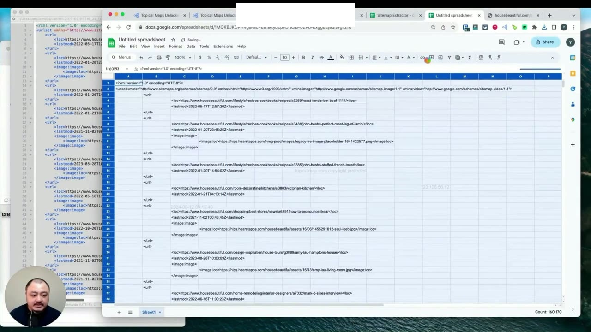
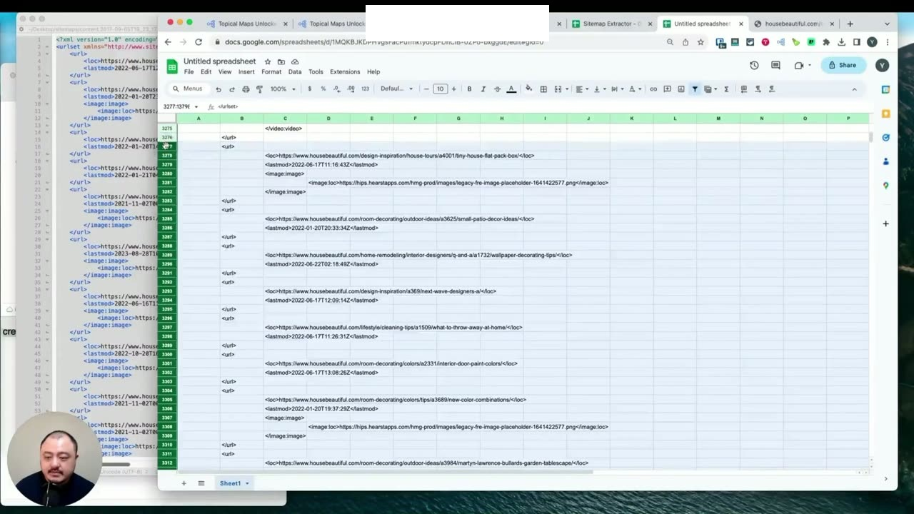
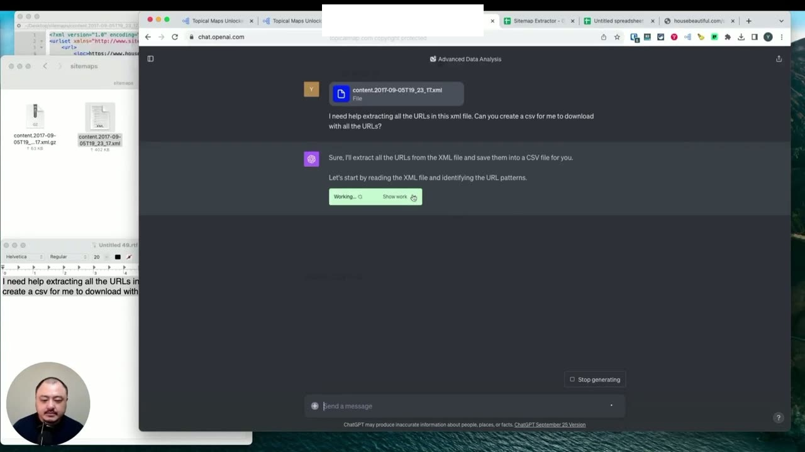
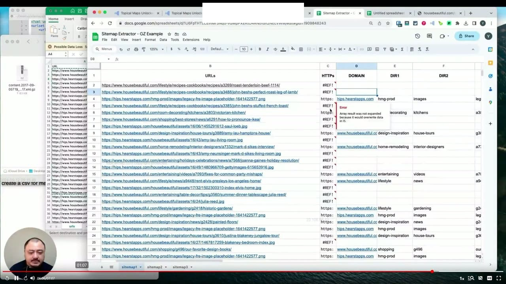
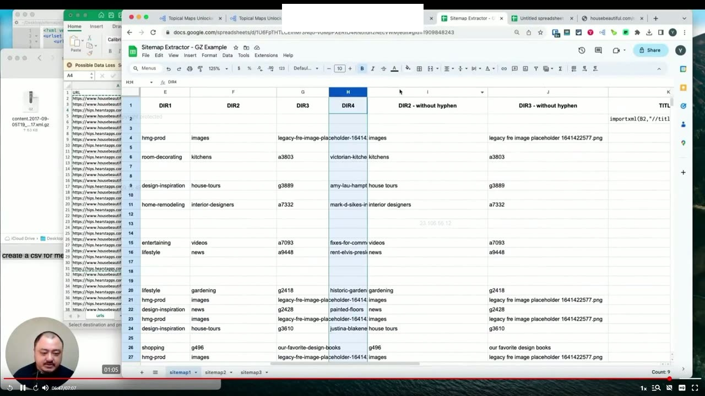

Sitemap Zip File Extractions
1. Thách thức khi gặp tệp Sitemap nén dạng GZ và XML khổng lồ hàng chục ngàn dòng
Nhiều lần khi bạn truy cập vào các trang web lớn với hàng ngàn trang nội dung, hoặc trong trường hợp các sàn thương mại điện tử khổng lồ là hàng chục ngàn hay hàng trăm ngàn trang, bạn sẽ thấy rằng họ có rất nhiều tệp sitemap được nén lại dưới định dạng tệp .gz (Gzip). Đó là các sơ đồ trang web được nén lại để giảm bớt dung lượng truyền tải trên máy chủ.
Điều bạn cần làm đầu tiên là tìm những tệp tham chiếu đến bài viết hoặc nội dung chính mà bạn muốn phân tích. Nếu bạn cố tình sao chép đường dẫn tệp nén này và dán trực tiếp vào công cụ trích xuất sơ đồ trang web của chúng tôi trên Google Sheets, bạn sẽ nhận thấy nội dung XML được nhập vào không thể phân tích cú pháp được, bởi vì đó là một tệp nén riêng biệt chứ không phải tệp văn bản mở.
Do đó, quy trình bắt buộc là bạn phải dán liên kết vào trình duyệt để tải tệp .xml.gz về máy tính của mình, sau đó mở ra và tiến hành giải nén nó.

2. Giải nén tệp GZ và cách lọc dữ liệu thủ công trong Google Sheets
Sau khi giải nén, bạn sẽ thu được một tệp .xml tiêu chuẩn. Tùy thuộc vào phần mềm trên máy tính, bạn có thể mở nó bằng các trình soạn thảo mã nguồn hoặc trình xử lý văn bản như Notepad. Khi mở ra, bạn sẽ thấy tất cả các tham số kỹ thuật đều hiển thị đầy đủ: các đường dẫn URL, vị trí thẻ <loc> và ngày sửa đổi cuối cùng <lastmod>.
Cách làm thủ công truyền thống là sao chép toàn bộ nội dung dán vào Google Sheets. Tuy nhiên, Yoyao khuyên không nên sao chép mù quáng tất cả mọi thứ vì dung lượng tệp có thể kéo dài xuống tới 13.000 hàng, thậm chí lên tới 140.000 hàng dữ liệu, gây đóng băng và treo hoàn toàn bảng tính của bạn!
Nếu làm trong bảng tính, bạn phải xóa bớt các hàng không cần thiết, sau đó sử dụng bộ lọc để lọc ra các dòng chứa tiền tố http. Tiếp theo, dùng tính năng Tìm kiếm và Thay thế (Find and Replace) để tìm thẻ mở <loc> và thay thế bằng rỗng, rồi tiếp tục tìm thẻ đóng </loc> và thay thế bằng rỗng để chuyển đổi chúng thành các URL hoàn chỉnh.

3. Ứng dụng ChatGPT Advanced Data Analysis để trích xuất tự động sang tệp CSV
Để giải phóng sức lao động và xử lý các tệp XML khổng lồ chứa tới 140.000 hàng dữ liệu một cách nhẹ nhàng, Yoyao chia sẻ một phương pháp hiện đại và cực kỳ hiệu quả: Sử dụng tính năng Phân tích dữ liệu nâng cao (Advanced Data Analysis) của ChatGPT.
Quy trình thực hiện gồm các bước cụ thể:
- Tải trực tiếp tệp
.xmltừ máy tính của bạn lên giao diện ChatGPT. - Đưa câu lệnh yêu cầu rõ ràng: "Tôi cần giúp đỡ để trích xuất tất cả các URL trong tệp XML này. Bạn có thể tạo một tệp CSV để tôi tải xuống với tất cả các URL không?"
- ChatGPT sẽ viết mã Python tự động chạy trên môi trường sandbox để bóc tách dữ liệu. Đôi khi tệp quá lớn mô hình có thể báo gặp khó khăn, nhưng nó sẽ tự động thử lại nhiều lần và xuất ra 10 URL đầu tiên để bạn kiểm tra đối chiếu.
- Sau khi xác nhận dữ liệu chính xác, ChatGPT sẽ tạo sẵn một liên kết để bạn tải tệp
.csvhoàn chỉnh về máy tính của mình chỉ sau ít phút.

4. Quản lý tệp dữ liệu lớn: Xử lý 38.000 URL và giải quyết lỗi tràn mảng dữ liệu
Khi mở tệp CSV vừa tải xuống, bạn có thể thấy khối lượng dữ liệu khổng lồ lên tới gần 38.000 URL! Yoyao lưu ý không nên sao chép toàn bộ 38.000 URL này cùng một lúc vào Google Sheets vì nó sẽ làm sập bảng tính một lần nữa. Thay vào đó, bạn nên lọc bớt các trang không liên quan hoặc chỉ chọn ra các thư mục con phục vụ trực tiếp cho chủ đề của bạn.
Một lỗi kỹ thuật thường gặp khi nhập dữ liệu phân cấp sâu vào bảng tính mẫu là thông báo lỗi: "Kết quả mảng không được mở rộng vì nó sẽ ghi đè dữ liệu trống" (Array result was not expanded because it would overwrite data). Yoyao giải thích nguyên nhân: Đó là vì cấu trúc URL của đối thủ đi sâu tới 5 cấp độ thư mục, trong khi bảng tính mẫu ban đầu chỉ thiết kế sẵn 4 cột.
Cách khắc phục cực kỳ đơn giản: Bạn chỉ cần chèn thêm một cột mới vào bảng tính, sao chép công thức phân tách URL sang cột mới đó và toàn bộ lỗi mảng sẽ được giải quyết triệt để ngay lập tức!

5. Làm sạch dấu gạch ngang và Chuyển giao hàng ngàn từ khóa vào Topical Map
Từ việc phân tách các đường dẫn URL thành các cột thư mục con, bạn thu được danh sách các sản phẩm và chủ đề, nhưng chúng vẫn còn dính các dấu gạch ngang nối từ (ví dụ: dry-dog-food). Để loại bỏ các dấu gạch ngang này, bạn có thể thực hiện theo hai cách:
- Sao chép danh sách và dán vào các công cụ xử lý văn bản trực tuyến miễn phí như TextTools.org để thay thế dấu gạch ngang bằng khoảng trắng.
- Hoặc sử dụng ngay hàm
SUBSTITUTEtrong Google Sheets để tự động chuyển dấu gạch ngang thành khoảng trắng một cách đồng loạt.
Sau khi làm sạch, bạn sao chép toàn bộ danh sách và thêm vào dàn ý nghiên cứu chủ đề của mình. Quy trình này đòi hỏi một vài bước bổ sung so với bình thường, nhưng hoàn toàn xứng đáng vì nó mang lại cho bạn hàng ngàn từ khóa và ý tưởng chủ đề cực kỳ chất lượng từ các đối thủ lớn nhất trong ngành.

Nguồn và đối chiếu
- Topical Maps Unlocked 2.0 · 04-Sitemap Zip File Extractions (Video bài học chính).
- Bản tiếng Anh không có video riêng cho bài học này; nội dung đối chiếu trực tiếp từ slide và video chính.